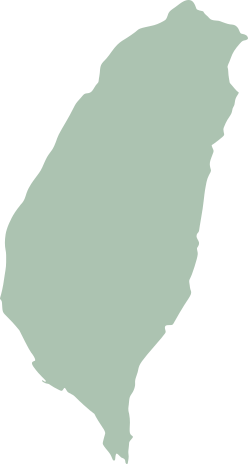
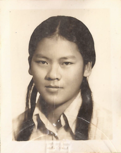
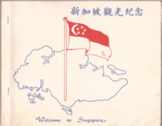
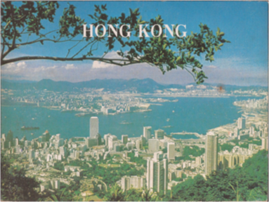
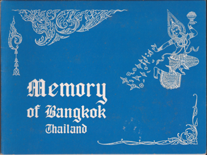
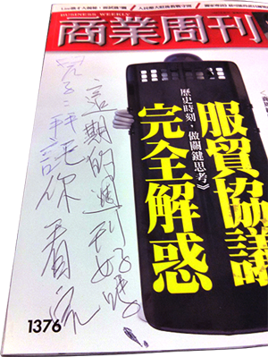

我的老媽
載入中
1954.11.27
0 歲
記得姨媽們說，我們家撤離大陳島時，
我媽才幾個月大。
因為太年幼，物資又匱乏
我媽差點就被留在大陳島上。
往下捲動

媽媽的年輕日子
是一場
傳奇冒險
曲折， 但是
精彩
1974
20 歲
雙馬尾。

去過新加坡玩。

還有香港。

以及泰國。

一直玩一直玩一直玩
最後，
安定下來
1990
36 歲
翔勝出生
轉眼間
2014.11.27
60 歲
歲月的痕跡再也藏不住
但心還年輕，偶爾還是會
留下這樣的瀏覽記錄
雖然我們有時
意見不一樣

你好，我是柯文哲。
無黨籍我今（10/28）日推出第27支柯P新政田園城市，由台灣第一位獲得美國認證的「園藝治療師」黃盛璘及社區大學全國促進會秘書長楊志彬陪同出席記者會。我認為，希望台北市變成一個可以種田、種菜的城市。...
你好，我是連勝文。
我提出「適性發展，讓孩子做最好的自己」 雖然十二年國教的爭議現在已經逐漸平息，但事實上，政府教育的改革現在才正要開始面臨挑戰。根據兒福聯盟公佈的數據表示，目前有...
即使意見不一樣
我們還是同屬一家
一直以來
（尤其是最近）
辛苦了
媽媽，生日快樂